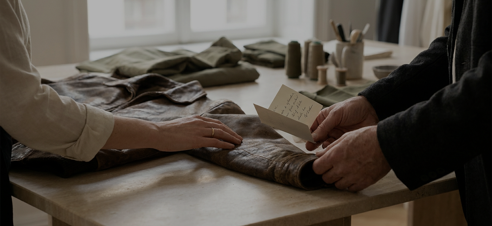

§ 06 — ContactHow a request works
Every objecthas its use.
의뢰 시 가치와 절차를 안내합니다.

세상 모든 사물들은 그것의 쓰임이 있습니다. 하지만 시간이 지남에 따라 그 쓰임을 다하여 종말을 맞이하게 됩니다.
patina는 이점에 주목하여 쓰임을 다한 사물들에 새로운 가치를 주고자 합니다.
쓰임을 다한 사물들일지라도, 그들은 분명 그 사용자의 추억의 조각들로 가득 차 있을 것입니다.
우리는 그러한 조각들을 기반으로 사물들을 재탄생시켜, 다시 돌려 드리고자 합니다.
§ 06.1의뢰 절차 — Process
- 01
제품의뢰서 작성
가이드라인에 맞춰 간단한 의뢰서 작성
- 02
의뢰서 검토 및 견적서 전달
의뢰서 기반 제작자 산정 예상 견적서 전달
- 03
최종 제안서 작성
견적서 토대로 고객과 소통 최종 제안서 확정
- 04
파티나 박스 전달
제품 수거용 patina 박스 전달 (크기에 따라 상이)
- 05
최종 작업물 전달
고객과의 소통으로 완성된 최종 patina 작업물 전달
- 06
제작 과정 아카이브
제작과정 실시간 공유, 고객이 직접 확인 가능
* 작업물은 추후 파티나 아카이브에 업로드될 수 있습니다.